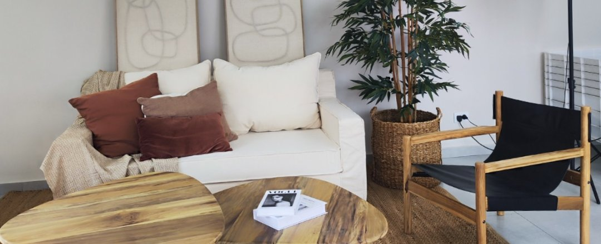
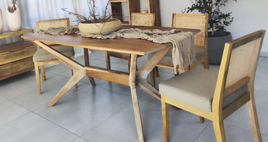
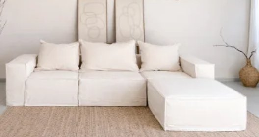

Asesoramiento & diseño de espacios
Equipamiento integral a medida — Lorena Z
Propuesta de equipamiento integral para una casa completa, definiendo mobiliario y decoración por ambiente a partir de las necesidades del cliente.
- Living: mueble modular, juego de mesas centro, sillones con funda en lienzo, alfombra.
- Comedor: mesa, estantería, sillas, lámparas.
- Cocina: mesa y sillas.
- Decoración: almohadones en tonos tierra, mantas, canastos con plantas, espejo, cuadros.